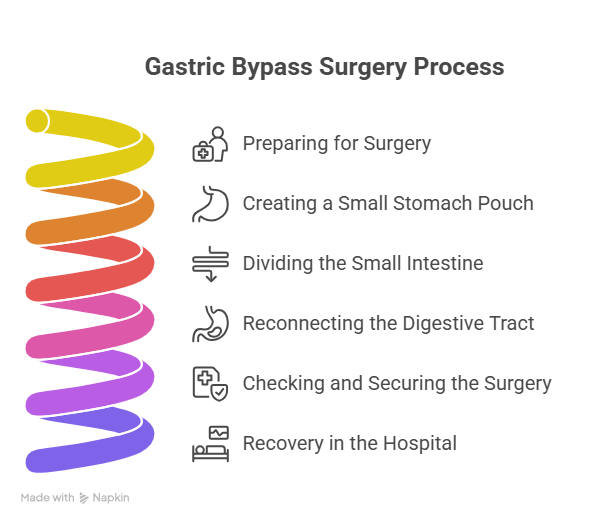
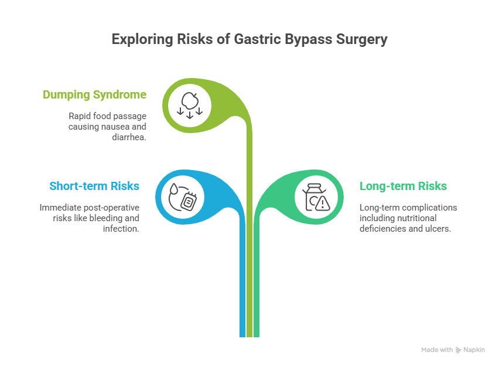

Obesity is one of the most common health issues affecting millions of people worldwide. For some, traditional weight loss methods such as dieting and exercise may not be effective in the long run. That’s where bariatric surgeries like gastric bypass surgery in Delhi come into the picture. However, if you are considering it, you may wonder: What happens during gastric bypass surgery?
In this detailed guide, we’ll explain the procedure step by step, including how it works, what you can expect before, during, and after surgery, as well as the benefits, risks, and recovery process.
What happens during Gastric Bypass Surgery?
In this detailed guide, we’ll explain: “What happens during gastric bypass surgery?”including how it works, what you can expect before, during, and after surgery.
Book Your Appointment TodayUnderstanding Gastric Bypass Surgery
Gastric bypass surgery is one of the most widely performed bariatric (weight-loss) procedures in the world. It is designed for people who struggle with obesity and find it difficult to lose weight through traditional methods like diet, exercise, or medication.
At its core, gastric bypass works on two principles:
- Restriction – The stomach is made smaller so you can eat only small portions of food.
- Malabsorption – The food you eat bypasses a section of your small intestine, so fewer calories and nutrients are absorbed.
This combination makes gastric bypass more effective than many other weight-loss methods because it helps you consume fewer calories while also reducing how many your body absorbs.
Why do People Choose Gastric Bypass Surgery?
People generally choose gastric bypass when:
- Diet and exercise alone haven’t worked.
- Obesity-related health conditions like diabetes, high blood pressure, or sleep apnea are affecting daily life.
- Doctors recommend surgical intervention as a long-term solution for weight loss.
This surgery not only helps in weight reduction but also improves or resolves many obesity-related health issues.
What Happens During Gastric Bypass Surgery? (Step-by-Step Explanation)

Let’s break down the surgery process into easy-to-understand steps:
1. Preparing for Surgery
Before the actual surgery begins, the patient is taken to the operating room and given general anesthesia. This means you will be asleep throughout the procedure and won’t feel any pain. The medical team will also insert monitoring equipment to track your breathing, heart rate, and blood pressure. In most cases, surgeons use a laparoscopic technique, where small cuts are made in the abdomen and a tiny camera (laparoscope) is used to guide the surgery. This approach is less invasive than open surgery and usually allows faster recovery.
2. Creating a Small Stomach Pouch
Once anesthesia has taken effect, the surgeon focuses on making the stomach smaller. Using surgical staples, the stomach is divided into two sections. The upper part, which is made into a small pouch about the size of an egg, becomes the new functional stomach. This pouch can only hold a small amount of food, which means you will feel full quickly after eating just a little. The larger remaining portion of the stomach is sealed off but not removed from the body—it continues to produce digestive juices that help with digestion later in the process.
3. Dividing the Small Intestine
After the stomach pouch is created, the surgeon moves on to the small intestine. The small intestine is divided into two parts. The lower part of the intestine is brought up and attached directly to the new, smaller stomach pouch. This step is important because it allows food to “bypass” the rest of the stomach and the upper portion of the intestine. By skipping this section, the body absorbs fewer calories and nutrients, which promotes weight loss.
4. Reconnecting the Digestive Tract
The bypassed section of the small intestine, which is still attached to the larger portion of the stomach, is then connected further down the digestive tract. This connection ensures that digestive juices such as bile and enzymes from the pancreas can still mix with food. Even though food takes a shorter route, this reconnection is essential to allow proper digestion and absorption of nutrients, though at a reduced level.
5. Checking and Securing the Surgery
Once the new stomach pouch and intestinal connections are in place, the surgeon carefully checks everything to make sure there are no leaks and that blood flow is normal. The surgical tools and camera are removed, and the small cuts made during the laparoscopic procedure are closed with stitches or surgical glue. At this point, the surgery is complete. On average, the entire process takes about 2 to 4 hours, depending on the patient’s health and the complexity of the case.
6. Recovery in the Hospital
After the surgery, the patient is moved to a recovery area, where doctors and nurses closely monitor vital signs. Most patients spend 2–3 days in the hospital before going home. In the first few hours after surgery, you will only be allowed small sips of water. Gradually, your diet will progress from clear liquids to pureed food, then soft food, and finally small amounts of solid food over a few weeks.
Benefits of Gastric Bypass Surgery
Gastric bypass surgery is considered one of the most effective treatments for severe obesity and related health problems. Beyond just helping with weight loss, it can bring about long-term improvements in overall health and quality of life. Let’s explore the major benefits in detail:
1. Significant Weight Loss – Patients lose 60–80% of their excess weight over 1–2 years.
2. Improves Health Conditions – Diabetes, hypertension, and cholesterol often improve or even resolve.
3. Better Quality of Life – Increased mobility, higher confidence, and better participation in daily activities.
4. Long-Term Success – Compared to other weight-loss methods, gastric bypass offers sustainable results.
What Happens Right After the Surgery?
Right after gastric bypass surgery, patients are moved from the operating room to a recovery area where doctors closely monitor their condition. Here’s what typically happens:
Recovery Monitoring – You’ll wake up in a recovery room where doctors and nurses closely check your breathing, heart rate, and overall condition.
Pain Management – Some soreness or discomfort is normal, and pain medicines are given to help you feel comfortable.
Early Movement – You’ll be encouraged to get out of bed and walk within a few hours to improve blood flow and prevent blood clots.
Diet Progression – Initially, only small sips of water or clear liquids are allowed, gradually moving to pureed and soft foods.
Hospital Stay – Most patients stay in the hospital for about 2–3 days before being discharged.
Discharge Instructions – Before leaving, your doctor will explain diet changes, medications, and follow-up care.
Risks and Possible Side Effects

Like any surgery, gastric bypass has some risks:
- Short-term risks: bleeding, infection, and blood clots.
- Long-term risks: nutritional deficiencies (iron, calcium, vitamin B12), bowel obstruction, ulcers.
- Dumping Syndrome: a condition where food moves too quickly into the small intestine, causing nausea, diarrhea, and weakness.
Most risks can be managed with proper diet, lifestyle changes, and follow-up care.
Conclusion
Now that you know what happens during gastric bypass surgery, it’s clear that this procedure is a life-changing option for people struggling with obesity and related health issues. The surgery works by reducing the stomach size and rerouting the intestines, helping you eat less and absorb fewer calories.
With the guidance of skilled bariatric surgeons like Dr. Atul Peter’s, patients undergoing Gastric Bypass Surgery in Delhi can achieve long-term weight loss and improved health outcomes.
What happens during Gastric Bypass Surgery?
In this detailed guide, we’ll explain: “What happens during gastric bypass surgery?”including how it works, what you can expect before, during, and after surgery.
Book Your Appointment TodayFrequently Asked Questions
How long does Gastric Bypass Surgery take?
Is Gastric Bypass Surgery painful?
How much weight can I lose after Gastric Bypass?
What foods can I eat after Gastric Bypass?
Is Gastric Bypass permanent?
Recommended Further Reading
Have Personal Health Questions?
Consult with Dr. Atul Peters and our expert multidisciplinary team at Max Smart Super Speciality Hospital, Saket, New Delhi.
Book Your Consultation